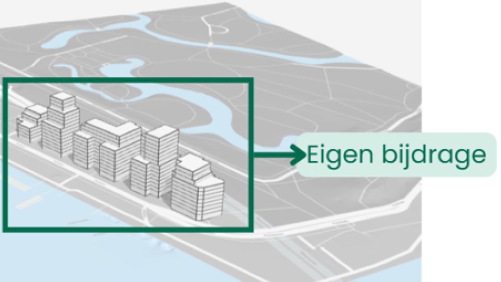

Hittestress-analyse Parkhaven
Kaarten en een hittestressanalyse in ArcGIS Pro voor het masterplan Parkhaven, waarin ik het effect van bomen, groene daken en een groene kade op de gevoelstemperatuur vergelijk.
Leerdoel 2.2
Competentie 2
Samenwerken in teams met digitale middelen
Voor project 1 (Parkhaven) hadden we zo snel mogelijk de gebouwen van het masterplan nodig om simulaties te kunnen maken.
N. Morales en ik moesten de gebouwen modelleren.
We besloten Forma te gebruiken. Voor de efficiëntie deed ik een aantal gebouwen en zij een aantal, zodat het samen één geheel werd. Omdat ik mijn deel eerst klaar had, legde ik N. Morales uit hoe ik het precies in Forma had gedaan, zodat de gebouwen met elkaar overeen zouden komen.
Ik gebruikte de overzichtstekening van het masterplan op schaal als onderlegger en speelde met de afmetingen van de hoogtes. Dat was een gepuzzel, omdat in de gegevens alleen het hoogste punt stond en niet de verdiepingen ertussen. Daarnaast exporteert Forma altijd een IFC-bestand inclusief terrein, en dat hadden we niet nodig. Daarom zette ik het eerst in Revit om het terrein weg te halen en exporteerde het daarna opnieuw als IFC voor Tygron of ArcGIS.
We hadden alle gebouwen in één model, klaar voor de simulaties.
Forma is best eenvoudig en je leert snel hoe het werkt. De samenwerking ging prima zolang we maar niet op dezelfde plek werkten. Ik heb vooral geleerd om met Forma te werken, want ik had het eerder niet gebruikt. Ik wil mij verder ontwikkelen in de omgevingstools en de analyses die Forma zelf maakt.
Aangetoond in
Helder communiceren van bevindingen
Voor project Parkhaven moesten we aan de bedrijven achter het masterplan onze resultaten presenteren, om te kijken welke klimaatadaptatiemaatregelen bij de gebouwen konden.
Ik presenteerde de hittestressanalyse ten opzichte van groen. We moesten onze bevindingen helder en doelgroepgericht overbrengen.
De presentatie is niet goed verlopen. Een feedbackpunt dat mij bijbleef, kwam van de gastbezoeker: waar willen we naartoe met al deze informatie? Dat ontstond door de samenwerking. We wilden met de resultaten meer doen, maar niet iedereen werkte effectief en dus kregen we tijdstekort. Zo ging een deel van de presentatie over soorten bomen. Ik vroeg mij af wat dat met digitale tools te maken had, want dat was niet wat we hadden afgesproken. Ook werkte de presentatie niet op de laptop, en wisselen van laptop was niet gepland.
Doordat minder mensen werkten, konden we geen mooi geheel maken van onze bevindingen. Dat had invloed op hoe we ze communiceerden.
We hadden gesproken met de personen die niet werkten, maar dat hielp niet. Als ik nu zie dat iemand niets doet, meld ik dat direct bij de docenten. Ik had mijn eigen onderdeel ook kunnen afsluiten met een conclusie en een vervolgstap, zodat de vraag waar we naartoe willen beantwoord was.
Aangetoond in
Netwerken en kennisdeling
Ik ben naar de Prefab Beurs gegaan, waar veel bedrijven hun producten kwamen uitleggen. Ook heb ik meegedaan aan het inspiratie-event voor afstuderen.
Ik wilde mijn professionele netwerk opbouwen.
Op de Prefab Beurs vroeg ik bedrijven mijn QR-code te scannen, zodat ze hun contactgegevens of productinformatie konden sturen. Ik vertelde ook dat ik de minor Digitaliseren volg en dat ik daar erg in geïnteresseerd ben. Bij het inspiratie-event sprak ik met een aantal bedrijven en vertelde ik wat ik in mijn minor heb geleerd.
Ik kreeg contactgegevens en volgde de bedrijven op Instagram of LinkedIn. Het netwerk leverde vooral inzicht in wat anderen in de praktijk met digitaliseren doen. Ik kreeg veel kennis en nieuwe interesses in het bouwen van digitale tools.
Digitaliseren in de gebouwde omgeving is heel anders dan wat ik gewend ben, en juist dat vind ik inspirerend. Het is echt een hot topic bij bedrijven. Dat heeft mij geïnspireerd om dieper in digitaliseren te duiken.
Nog geen projecten gekoppeld aan dit leerdoel.
Leerdoelen gebruikt: 2.1, 2.2 en 2.3 (persoonlijk leerdoel PD3)
Bij project 1 (Parkhaven) onderzochten we met een groep welke klimaatadaptatiemaatregelen bij de gebouwen van het masterplan konden. Mijn taak was de hittestressanalyse in ArcGIS Pro. Mijn persoonlijke leerdoel was goed samenwerken met digitale tools, zodat we tot één samenhangende oplossing komen. Mijn startsituatie was dat iedereen aan zijn eigen onderdeel werkt en we pas op het laatst samenvoegen.
Voor de analyse hadden we de gebouwen van het masterplan nodig. Daarom ontwierpen N. Morales en ik die in Forma. Als groep spraken we meteen af om steeds af te stemmen.
Eerst maakte ik in ArcGIS Pro kaarten van het studiegebied, waaronder hittestress. Later paste ik de analysetools zelf toe, tekende ik maatregelen met groen en berekende ik de heat index. Zo zette ik de effecten van bomen, groene daken, een groene kade en alle maatregelen naast elkaar. Met legenda's en een duidelijke afkadering maakte ik de kaarten begrijpelijk voor anderen.
Voor de gebouwen gebruikten N. Morales en ik Forma, dat nieuw voor mij was. Omdat ik mijn deel eerst klaar had, legde ik haar uit hoe ik het had gedaan, zodat de gebouwen op elkaar aansloten. Ik gebruikte de overzichtstekening van het masterplan op schaal als onderlegger. Omdat Forma het terrein meeneemt in de IFC, haalde ik dat eerst in Revit weg.
Het Forma-model lukte: alle gebouwen in één model, klaar voor de analyse. De belangrijkste uitkomst was dat de omgeving met alle maatregelen samen 2 graden koeler wordt.
Bij de eindpresentatie aan de bedrijven presenteerde ik de analyse ten opzichte van groen, maar de presentatie verliep minder goed. De gastbezoeker vroeg waar we naartoe wilden met al deze informatie. De docenten vroegen wat een deel over soorten bomen met digitale tools te maken had; een groepslid had dat zelf besloten, zonder afspraak met de groep. Een ander groepslid wilde haar Grasshopper-script laten zien, maar had het niet in de PowerPoint gezet. Haar laptop aansluiten lukte niet. We hadden dit vooraf moeten testen, maar dat was niet afgesproken.
Samenwerken met één persoon, met een concrete afspraak en uitleg, ging goed. In de hele groep lukte dat niet: afspraken helpen alleen als iedereen zich eraan houdt. We spraken de personen aan die niet werkten, maar dat hielp niet. Voortaan meld ik het direct bij de docent als iemand niets doet of zelf dingen besluit zonder afspraak. Ik had mijn eigen onderdeel ook kunnen afsluiten met een conclusie en een vervolgstap, zodat de vraag waar we naartoe willen beantwoord was.
Los hiervan bouwde ik mijn netwerk op (2.3). Tijdens de speeddatesessie sprak ik met vier professionals en op de Prefab Beurs met meer dan 15 mensen en bedrijven. Ik liet mijn QR-code scannen en vertelde dat ik de minor Digitaliseren volg. Zo leerde ik wat anderen in de praktijk met digitaliseren doen en dat het een hot topic bij bedrijven is.
Kaarten en een hittestressanalyse in ArcGIS Pro voor het masterplan Parkhaven, waarin ik het effect van bomen, groene daken en een groene kade op de gevoelstemperatuur vergelijk.
Leerdoel 2.2

De gebouwen van het masterplan Parkhaven, samen met een groepsgenoot nagebouwd in Forma als basis voor de hittestressanalyse, en een eerste simulatie in Tygron.
Leerdoel 2.1

Mijn eigen ontwerp voor een overspanning van kleiblokken, parametrisch gemaakt in Grasshopper voor project 2 (digitale fabricage).
Leerdoel 2.1